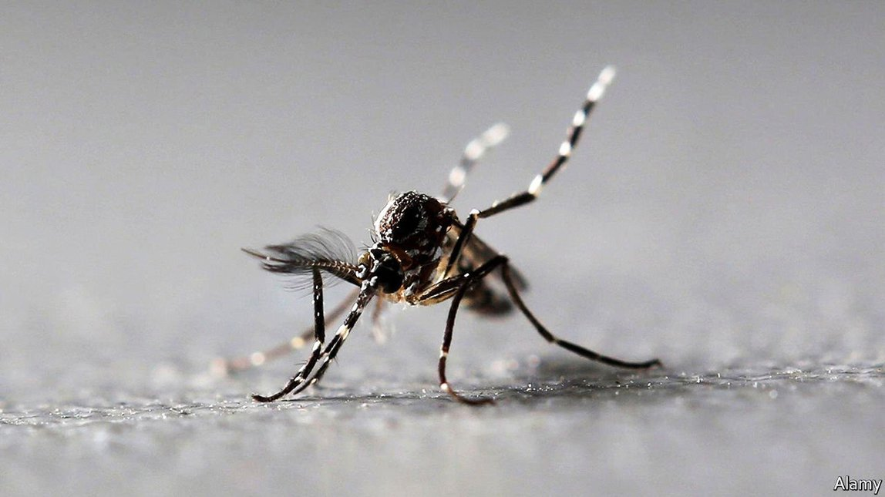

2021-06-30T15:27:08+00:00
害虫防治
基因工程可能有助于控制携带疾病的蚊子
它能生成健壮但无生殖能力的蚊子

每年有数以亿计的人感染疟疾和登革热等蚊媒疾病。成千上万人死去。药物治疗并不完美。而且，尽管付出了几十年的努力，许多此类疾病的疫苗研发还是困难重重。
所以最好是在一开始就不让这类感染有机会发生，方法是消灭携带这些疾病的蚊子，或者至少抑制其繁殖。在近日发表在《美国国家科学院院刊》上的一篇论文中，加州大学圣巴巴拉分校的克雷格·蒙特尔（Craig Montell）领导的一个研究小组描述了CRISPR-Cas9这种强大的新型基因工程技术如何有望帮助实现这一目标。
蒙特尔和他的同事们用CRISPR技术加强了一种已有的防治方法——不育昆虫技术（SIT）。这一方法是将大量绝育的雄虫放归野外。与这些雄虫交配的雌虫无法繁殖后代。如此反复放归就会大大减少种群数量。在北美，SIT已被用于消灭农业害虫螺旋蝇，也用于抑制几种吃农作物的果蝇。
这种方法也曾在蚊子身上试验过，但效果不太好。原因之一似乎是它的副作用。要使雄蚊绝育，得让它们受到辐射或暴露在有毒化学物质中。这的确能够实现绝育，但也会对它们造成其他损害。结果可能让它们变成了病怏怏的个体，在交配竞赛中敌不过野生雄蚊。
蒙特尔和同事希望CRISPR技术能够提供另一种绝育选择。他们的第一步工作是寻找那些在失效后会导致雄蚊不育的基因。他们开始在基因研究的“老朋友”果蝇身上寻找这样的基因。他们重点研究了一种基因，去除它会让雄性果蝇不育，在他们的目标埃及伊蚊（Aedes aegypti）身上也存在类似形式的基因。埃及伊蚊是黄热病、登革热和寨卡病毒等疾病的传播媒介。让雄性伊蚊身上相应的基因失效同样会让它们不育。
至关重要的是，这番基因微调看来没有影响到被改造的蚊子的其他方面。它们在每一项健康指标上的表现都和野生同类一样好。即使丧失了繁殖能力，它们在实验室中仍然能够与雌蚊交配。
蒙特尔说，虽然还不完全清楚细节，但雌蚊在交配过几次之后会变得不大愿意再交配。因此，与不育的雄蚊交配不仅本身不会有成果，应该还会减少雌蚊之后对野生雄蚊的兴趣。果不其然，在蚊笼里进行的一系列实验表明，释放五六倍于野生雄蚊数量的经基因改造雄蚊，就足以让繁殖期的雌蚊数量减少一半。将这一比例提高到15倍后，繁殖期雌蚊的数量下降了80%。
蒙特尔说，在开展实地试验之前还要做更多工作。但既然已确定了原理，他对于这项工作有可能带来的前景感到很兴奋。在果蝇和伊蚊身上都发现了目标基因，这表明它可能也存在于其他携带疾病的蚊子身上。而鉴于这样经基因改造的雄性不会留下任何后代，也就无需太过担心将数百万经基因改造的生物释放到环境中可能产生的意外后果。
研究小组有一个更大胆的构想：是否可能创造出尽管不能生育、但却能在交配竞赛中压过它们未经基因工程改造的近亲的雄性。要对历经数百万年的进化成果做改进往往会很困难。即使研究人员能够找到某种可以提高雄性吸引力的改动，也可能会降低动物的整体健康状况。这样的基因微调通常会在后代的自然选择中被淘汰掉。但是蒙特尔说，因为每一代雄性都是在实验室里新创造出来的，所以不用担心任何长期效应。如果研究小组能找到正确的突变基因，这种经基因改造的“致命美男”可能会为防蚊灭蚊工作再添马力。
2021-06-30T15:27:08+00:00
Pest control
Genetic engineering may help control disease-carrying mosquitoes
It produces fit and healthy eunuchs
EVERY YEAR, hundreds of millions of people catch mosquito-borne diseases like malaria and dengue fever. Hundreds of thousands die. Drug treatments are imperfect. And, despite decades of effort, vaccines have, for many of these diseases, proved tricky to develop.
Better, then, to stop those infections happening in the first place, by exterminating—or at least suppressing—the mosquitoes that carry the diseases. In a paper just published in the Proceedings of the National Academy of Sciences, a team of researchers led by Craig Montell, of the University of California, Santa Barbara, describe how CRISPR-Cas9, a new and powerful genetic-engineering process, could help to do just that.
Dr Montell and his colleagues used CRISPR to boost an existing control method called the sterile insect technique (SIT). This involves releasing lots of sterilised males into the wild. Females that mate with these males produce no offspring. Repeated releases can reduce populations dramatically. SIT has been used in North America to eliminate screwworm flies, an agricultural pest, and to suppress several species of crop-munching fruit flies.
It has been tried on mosquitoes, too, but with less success. One reason seems to be side-effects of the procedure. To sterilise them, males are zapped with radiation or exposed to toxic chemicals. This works, but it damages them in other ways, too. The result can be sickly individuals that struggle to compete in the mating game with their wild counterparts.
Dr Montell and his colleagues hoped that CRISPR might offer an alternative. Their first step was to look for genes which, when disabled, would render male mosquitoes infertile. They began their hunt in fruit flies, a stalwart of genetic research. They focused on a gene that, when removed, made male fruit flies sterile—and which was present in a similar form in their target mosquito species, Aedes aegypti, which is the vector of, among other illnesses, yellow fever, dengue and Zika virus. Disabling the equivalent gene in male Aedes likewise left them infertile.
Crucially, the genetic tweak involved did not appear to hinder the modified mosquitoes in any other way. On every measure of healthiness they performed as well as their wild counterparts. And even though they were firing blanks, they were still able to mate with females in the laboratory.
Although the details are not fully understood, says Dr Montell, once female mosquitoes have mated a few times, they become less receptive to doing so again. Mating with an infertile male is therefore not only fruitless in itself, but should also leave a female less interested in unmodified males in future. Sure enough, a series of experiments conducted in cages suggested that releasing between five and six genetically modified males for each wild male was enough to cut the number of reproducing females by half. Upping that ratio to 15:1 dropped it by 80%.
There is more work to do before field trials, says Dr Montell. But having established the principle, he is excited to see where the work might lead. That the target gene is found in both fruit flies and Aedes suggests it is likely to exist in other disease-carrying mosquitoes, too. And that the engineered males leave no offspring means fewer worries about any unintended consequences which might arise from releasing millions of genetically modified organisms into the environment.
More speculatively, the team is pondering whether it might be possible to create males which can outplay their un-engineered cousins at the mating game, despite being infertile. Improving on millions of years of evolution would usually be hard. Even if researchers could find an alteration that improved a male’s attractiveness, it would probably reduce the animal’s overall fitness. Such a genetic tweak would ordinarily be winnowed out by natural selection over subsequent generations. But because each generation of males is created anew in a laboratory, says Dr Montell, there is no long run to worry about. If the team can find the right mutation, such genetically engineered hommes fatales could give mosquito-suppression efforts an even bigger boost. ■
2021-06-30T15:27:08+00:00
害蟲防治
基因工程可能有助於控制攜帶疾病的蚊子
它能生成健壯但無生殖能力的蚊子
每年有數以億計的人感染瘧疾和登革熱等蚊媒疾病。成千上萬人死去。藥物治療並不完美。而且，儘管付出了幾十年的努力，許多此類疾病的疫苗研發還是困難重重。
所以最好是在一開始就不讓這類感染有機會發生，方法是消滅攜帶這些疾病的蚊子，或者至少抑制其繁殖。在近日發表在《美國國家科學院院刊》上的一篇論文中，加州大學聖巴巴拉分校的克雷格·蒙特爾（Craig Montell）領導的一個研究小組描述了CRISPR-Cas9這種強大的新型基因工程技術如何有望幫助實現這一目標。
蒙特爾和他的同事們用CRISPR技術加強了一種已有的防治方法——不育昆蟲技術（SIT）。這一方法是將大量絕育的雄蟲放歸野外。與這些雄蟲交配的雌蟲無法繁殖後代。如此反覆放歸就會大大減少種群數量。在北美，SIT已被用於消滅農業害蟲螺旋蠅，也用於抑制幾種吃農作物的果蠅。
這種方法也曾在蚊子身上試驗過，但效果不太好。原因之一似乎是它的副作用。要使雄蚊絕育，得讓它們受到輻射或暴露在有毒化學物質中。這的確能夠實現絕育，但也會對它們造成其他損害。結果可能讓它們變成了病怏怏的個體，在交配競賽中敵不過野生雄蚊。
蒙特爾和同事希望CRISPR技術能夠提供另一種絕育選擇。他們的第一步工作是尋找那些在失效後會導致雄蚊不育的基因。他們開始在基因研究的“老朋友”果蠅身上尋找這樣的基因。他們重點研究了一種基因，去除它會讓雄性果蠅不育，在他們的目標埃及伊蚊（Aedes aegypti）身上也存在類似形式的基因。埃及伊蚊是黃熱病、登革熱和寨卡病毒等疾病的傳播媒介。讓雄性伊蚊身上相應的基因失效同樣會讓它們不育。
至關重要的是，這番基因微調看來沒有影響到被改造的蚊子的其他方面。它們在每一項健康指標上的表現都和野生同類一樣好。即使喪失了繁殖能力，它們在實驗室中仍然能夠與雌蚊交配。
蒙特爾說，雖然還不完全清楚細節，但雌蚊在交配過幾次之後會變得不大願意再交配。因此，與不育的雄蚊交配不僅本身不會有成果，應該還會減少雌蚊之後對野生雄蚊的興趣。果不其然，在蚊籠里進行的一系列實驗表明，釋放五六倍於野生雄蚊數量的經基因改造雄蚊，就足以讓繁殖期的雌蚊數量減少一半。將這一比例提高到15倍後，繁殖期雌蚊的數量下降了80%。
蒙特爾說，在開展實地試驗之前還要做更多工作。但既然已確定了原理，他對於這項工作有可能帶來的前景感到很興奮。在果蠅和伊蚊身上都發現了目標基因，這表明它可能也存在於其他攜帶疾病的蚊子身上。而鑒於這樣經基因改造的雄性不會留下任何後代，也就無需太過擔心將數百萬經基因改造的生物釋放到環境中可能產生的意外後果。
研究小組有一個更大膽的構想：是否可能創造出儘管不能生育、但卻能在交配競賽中壓過它們未經基因工程改造的近親的雄性。要對歷經數百萬年的進化成果做改進往往會很困難。即使研究人員能夠找到某種可以提高雄性吸引力的改動，也可能會降低動物的整體健康狀況。這樣的基因微調通常會在後代的自然選擇中被淘汰掉。但是蒙特爾說，因為每一代雄性都是在實驗室里新創造出來的，所以不用擔心任何長期效應。如果研究小組能找到正確的突變基因，這種經基因改造的“致命美男”可能會為防蚊滅蚊工作再添馬力。